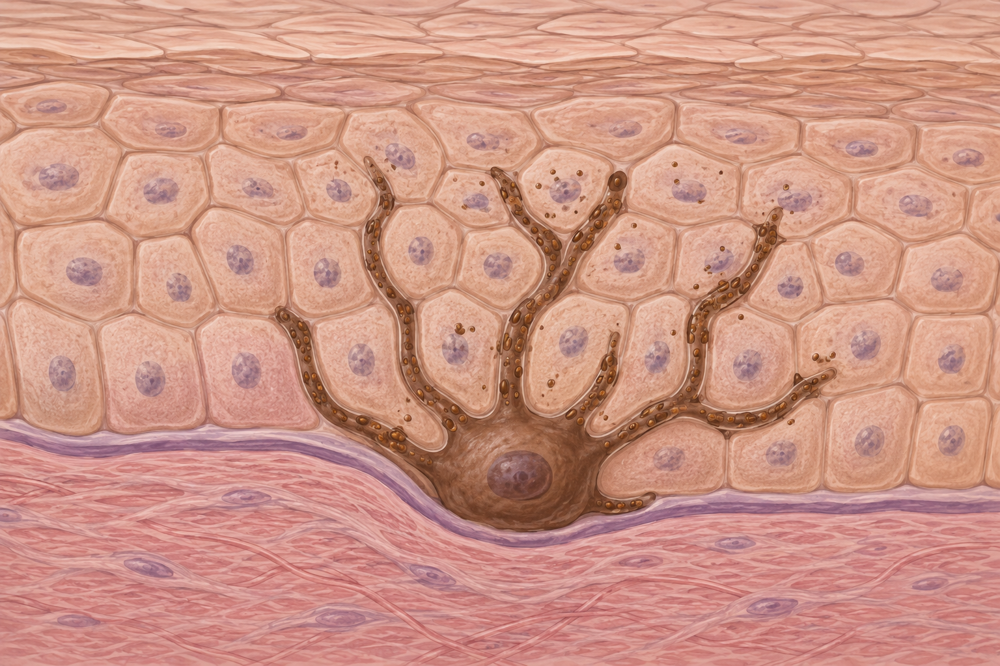
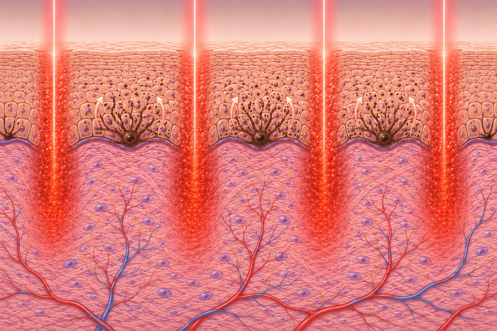

PIH после CO₂-фракционного лазера и удаления татуировок:
комплексный разбор механизмов, профилактики и лечения.
PIH — это не проблема меланина как такового.
Это проблема интенсивности воспаления,
глубины термического повреждения
и активации меланоцитов воспалительными медиаторами. © В. Микрюков, концепция лекции 2026
Поствоспалительная гиперпигментация (PIH) — приобретённое потемнение участков кожи, возникающее как ответ на любой воспалительный или травматический процесс. От лат. post inflammation — «после воспаления».
Частота возрастает по мере увеличения фототипа. У III–VI фототипов PIH — ведущее лазерное осложнение.
Источник: PMC 2023, обзор PIH после CO₂; Wu & Bae, 2025 — обзор по skin of color.
От меланоцита и меланогенеза — до триггеров PIH.
Меланоцит находится в базальном слое эпидермиса. Каждый меланоцит «обслуживает» ~30–40 кератиноцитов через дендриты, передавая им меланосомы.

Ключевой фермент — тирозиназаТирозиназа — медь-содержащий фермент, скорость-лимитирующий шаг меланогенеза. Её активность регулируется UV-облучением и провоспалительными цитокинами. Главная мишень для отбеливающих препаратов (гидрохинон, азелаиновая кислота).. Её активность регулируется UV-облучением и цитокинами. Это основная мишень отбеливающей терапии.
Меланоциты «прислушиваются» к воспалительному фону кожи. Цитокины, простагландины и активные формы кислорода (АФК) — все они усиливают синтез меланина в ответ на повреждение.
Чем сильнее воспаление — тем выше риск PIH. — PMC 2023, обзор PIH после CO₂
Практически важно: на каждый из этих медиаторов есть свой фармакологический «блокатор» (стероиды, ингибиторы COX-2, антагонисты лейкотриенов и т.п.) — отсюда и логика профилактической терапии.
Большинство «отбеливающих» препаратов действуют именно на тирозиназу. Понимая её механизм — понимаешь, что и зачем назначаешь.
| Препарат | Механизм | Сила | Линия |
|---|---|---|---|
| Гидрохинон 2–4% | Прямое ингибирование тирозиназы + цитотоксичность для меланоцитов | +++ | 1-я |
| Азелаиновая кислота | Конкурентный ингибитор тирозиназы, действует только на гиперактивные меланоциты | ++ | 1-я |
| Ретиноиды | Усиливают эпидермальное обновление + блокируют передачу меланосом | ++ | 1-я |
| Транексамовая кислота | Блокирует плазмин и PGE₂ → косвенно снижает тирозиназу | ++ | 2-я |
| Койевая кислота / арбутин | Слабое ингибирование тирозиназы | + | Поддержка |
Кто и почему страдает чаще. Как заранее распознать пациента «группы риска».
6 типов кожи по реакции на UV-облучение. Чем выше тип — тем больше меланина, и тем активнее меланоциты при любом воспалении.
Между III и V — резкий скачок. Именно поэтому стратегия для тёмной кожи должна быть кардинально другой.

Самая частая причина PIH в эстетической дерматологии у тёмных фототипов.
CO₂-лазер испаряет ткань через вскипание внутриклеточной воды. В фракционном режиме создаёт массив микро-колонок (MTZ — Microscopic Treatment Zones) с интактной тканью между ними.
У оператора лазера есть 3 ключевые ручки, которыми регулируется воспалительная нагрузка и, как следствие, риск PIH.
В работе Cheyasak et al. (Acta Dermato-Venereologica) на азиатских пациентах (фототипы III–V) показано: короткий курс топических стероидов сразу после CO₂-фракционного лазера достоверно снижает частоту PIH.
Особенности механизма Q-switched и пикосекундных лазеров. Почему даже «безопасный» pico даёт PIH.
| Параметр | Q-switched (нс) | Picosecond (пс) |
|---|---|---|
| Длительность импульса | 5–10 нс | 350–750 пс |
| Доминирующий механизм | Фототермический + фотоакустический | Фотоакустический (LIOB) |
| Тепловое повреждение | Выше | Ниже |
| Воспалительный ответ | Выраженный | Умеренный |
| Риск PIH | Высокий, особенно у тёмной кожи | Ниже, но НЕ нулевой |
| Количество процедур | 8–15 | 4–8 |
Пикосекундный импульс быстрее термического времени релаксации пигмента — энергия идёт в механическое дробление, а не в нагрев соседних тканей.
Маркетинг говорит «pico не вызывает PIH». Это миф. Пиковая мощность Pico огромна — при высокой флюенсе термический компонент всё равно есть. Воспаление возникает, меланоциты активируются.
Тип лазера снижает риск PIH, но не отменяет физиологию. Воспаление и меланоциты работают одинаково — независимо от того, нс или пс. © В. Микрюков, 2026
PIH — это финальная клиническая манифестация
теории воспалительной нагрузки.
Чем больший объём дермы вовлечён в воспаление
и чем меньше резерв тканей —
тем выше риск стойкой гиперпигментации. © В. Микрюков, Теория воспалительной нагрузки, 2026
До · во время · после процедуры. Что реально работает по данным современной литературы.
Цель — снизить активность меланоцитов и минимизировать воспалительный фон до того, как лазер коснётся кожи.
UV-облучение — главный триггер усиления и хронизации PIH. Без строгой фотозащиты вся остальная терапия теряет смысл.
Когда профилактика не сработала. Алгоритм 3 линий терапии — современные рекомендации 2024–2026.
Начинаем с первой линии — самая безопасная. Только если 8–12 недель без эффекта — переходим ко второй. Лазеры — третья линия, и то с осторожностью.
Все 2-линейные методы — только параллельно с продолжением SPF и осветляющей топической терапии.
Парадокс: лазер вызвал PIH — и им же мы пытаемся её лечить. Поэтому только минимальные параметры и контроль реакции после каждого сеанса.
Ключевое — управление ожиданиями. Пациент должен понимать, что PIH не разрешается за неделю. Без чётких сроков — конфликты неизбежны.
Понимание физиологии воспаления + грамотный выбор параметров + строгая фотозащита — этого достаточно, чтобы PIH стала редкостью даже у тёмной кожи.